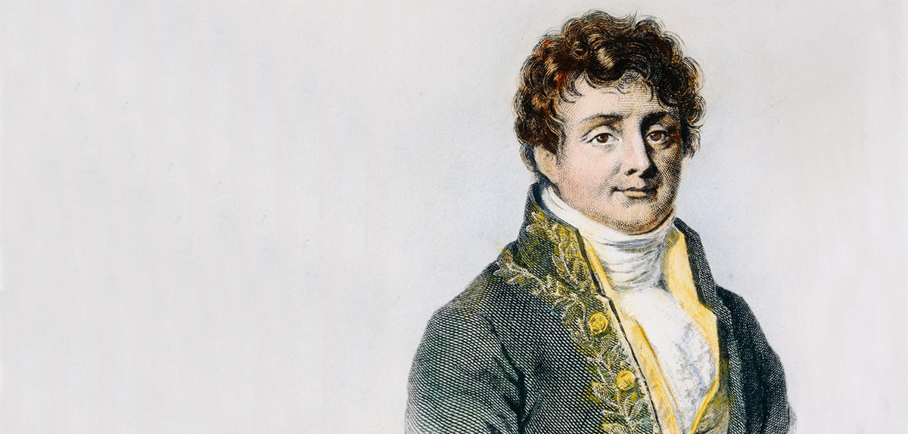

où \( u (t, x) \) est une fonction de déplacement et \( c \) une vitesse constante, sont connues sous le nom d'équations hyperboliques.
On trouve des équations hyperboliques ou paraboliques dans les problèmes de valeurs initiales: la configuration du champ \( u (t, x) \) est spécifiée à un moment initial et évolue dans le temps. Les équations elliptiques se retrouvent dans les problèmes de valeur limite: la valeur du champ \( u (x, y, z) \) est spécifiée sur la limite d'une région et nous cherchons la solution à travers l'intérieur.
L'équation de diffusion thermique est historiquement liée à Joseph Fourier. Ce dernier naquit en 1768 à Auxerre, où il étudie dans une école militaire. Fin 1794, il est élève à Normale Sup et en 1795-1796, il enseigne la physique à Normale Sup et à l'X. Il débute ses travaux sur la chaleur en 1802 lorsqu'il est nommé préfet de l'Isère par Napoléon. Il publie sa théorie sur la chaleur (et l'analyse de Fourier) en 1822. Il est élu à l'Académie française en 1826 et décédé à Paris en 1830.
Figure 1: Gravure du mathématicien Jean Baptiste Joseph Fourier (1768-1830). (source 1: Article de CNRS Le journal, Joseph Fourier transforme toujours la science)

Le cas des métaux est un peu particulier : eux possèdent des électrons de conduction, qui circulent librement sur le réseau du solide. Ces électrons se comportent comme les molécules d'un gaz (on parle de gaz d'électrons) et dans ce cas, à l'augmentation de l'amplitude des vibrations sur le réseau s'ajoute le transfert d'énergie cinétique des électrons rapides, "chauds" vers les électrons lents, "froids".
Pour l'exprimer plus précisément, on introduit un nouvel objet par analogie avec le courant électrique. Il s'agit du vecteur de courant volumique d'énergie interne sans travail noté classiquement \( \vec{J_u} \) et souvent nommé improprement "vecteur courant thermique", ce qui nous permet d'écrire l'expression du flux de ce vecteur à travers une surface dS orientée vers l'extérieur par le vecteur normal \( \vec{n} \) , ce qui nous donne \( I_u = \int_S \vec{J_u} . \vec{n} dS \). Le signe de \( I_u \) dépend du sens du flux à travers la surface. Il est négatif pour le flux entrant et positif pour le flux sortant (pensez au signe du produit scalaire sous l'intégrale...).
Pour faire simple, ici et dans la suite, on va se placer dans le cadre d'un problème unidimensionnel, c'est à dire que le transfert thermique d'énergie se fait sur une dimension \( Ox \).
La loi de Fourier relie, après constat expérimental, le vecteur de courant volumique d'énergie interne sans travail \( \vec{J_u} \) avec le gradient de température \( \vec{grad} T \). La relation est linéaire et s'écrit \( \vec{J_u} = - \kappa \ \vec{grad} T \). La linéarité de l'équation n'est due qu'aux approximations que nous avons fixé à son domaine de validité, comme pour la loi d'Ohm.
Le paramètre \( \kappa \) est appelé conductivité thermique, toujours positif, de dimension \( W.m^{-1}.K^{-1} \). Notez la présence du signe \( - \), qui résulte du second principe de la thermodynamique : le flux d'énergie va des régions aux températures les plus hautes vers les régions aux températures les plus basses.
Dans notre hypothèse d'un problème unidimensionnel, en développant le gradient, on obtient l'équation \( \vec{J_u} = - \kappa \dfrac{\partial T}{\partial x}\vec{u} \), soit en projetant sur \( Ox \), \( J_u(x,t) = - \kappa \dfrac{\partial T(x,t)}{\partial x} \) Nous obtenons une équation à deux variables, la position x et le temps t, avec une dérivée partielle.
Considérons un élément de volume dV orienté selon l'axe \( Ox \) de propagation du flux d'énergie, limité par deux surfaces dS, l'une entrante et l'autre sortante, et d'épaisseur \( dx \). Appelons \( \vec{J_uE} \) le vecteur de courant d'énergie volumique entrant et \( \vec{J_uS} \) le vecteur de courant d'énergie volumique sortant. Supposons que ces deux vecteurs soient normaux aux surfaces entrantes et sortantes.
Cet élément de volume \( dV \) est immobile et son énergie potentielle n'est pas modifiée par hypothèse. Selon le premier principe de la thermodynamique, la variation d'énergie interne dU n'est donc attribuable qu'à la variation \( dQ \), le transfert thermique d'énergie.
Calculons la variation d'énergie interne dans ce volume dV, de masse volumique \( \rho \), en utilisant la définition de \( \vec{J_u} \) donnée plus haut dans le cas unidimensionnel. Nous obtenons après simplification, en égalant \( dU \) et \( dQ \) : $$ \begin{align} \dfrac{\partial(\rho u)}{\partial t}dx = -J_{u,x}(x + dx,t) + J_{u,x}(x,t) \label{_auto5} \end{align} $$ En remarquant que \( J_{u,x}(x + dx,t) - J_{u,x}(x,t)= \dfrac{\partial J_{u,x}}{\partial x}dx \), on obtient finalement : $$ \begin{align} \dfrac{\partial(\rho u)}{\partial t} = - \dfrac{\partial J_{u,x}}{\partial x} \label{_auto6} \end{align} $$ Dans cette dernière équation, remplaçons dans le terme de droite \( J_{u,x} \) par sa définition donnée par la loi de Fourier, on obtient :
\( \dfrac{\partial(\rho u)}{\partial t} = - \dfrac{\partial}{\partial x}(- \kappa \dfrac{\partial T}{\partial x}) \) ou en condensant l'écriture : $$ \begin{align} \dfrac{\partial(\rho u)}{\partial t} = \kappa \dfrac{\partial^2 T}{\partial x^2} \label{_auto7} \end{align} $$ Vous aurez noté ici, si vous êtes attentifs, que j'ai considéré que \( \kappa \) était constant puisque je l'ai sorti de la dérivée sans autre forme de procès! C'est un peu osé, et vrai seulement si le milieu est isotrope (le matériaux est homogène) et si l'on ne chauffe pas trop fort ou trop vite, parce que sinon, il devient dépendant de la température.
Reste maintenant à traiter le terme de gauche. Pour ce faire, je vais faire appel à l'expression de la capacité calorique qui relie les variations de l'énergie avec les variations de température. On peut donc écrire que, si \( \rho u \) désigne l'énergie interne volumique : $$ \begin{align} \dfrac{\partial(\rho u)}{\partial t} = \rho c_v \dfrac{\partial T}{\partial t} \label{_auto8} \end{align} $$ avec \( c_v \) la capacité thermique massique à volume constant.
En reportant cette expression dans le terme de gauche de notre équation, j'obtiens : $$ \begin{align} \rho c_v \dfrac{\partial T}{\partial t} = \kappa \dfrac{\partial^2 T}{\partial x^2} \label{_auto9} \end{align} $$ soit en regroupant les termes constants à droite de l'équation : $$ \begin{align} \dfrac{\partial T}{\partial t} = \dfrac{\kappa}{\rho c_v} \dfrac{\partial^2 T}{\partial x^2} \label{_auto10} \end{align} $$ Pour simplifier l'écriture, je vais appeler \( D \) le rapport \( \dfrac{\kappa}{\rho c_v} \). Ce paramètre est la diffusivité thermique du matériau constituant notre élément de volume. La dimension de \( D \) est \( m^2.s^{-1} \). Finalement, j'obtiens l'équation : $$ \begin{align} \label{eq:diffT} \dfrac{\partial T}{\partial t} = D \dfrac{\partial^2 T}{\partial x^2} \end{align} $$ qui constitue l'équation de diffusion thermique!
Nous allons considérer que cette barre solide de longueur \( L = 1m \) de coefficient de diffusion thermique \( D \approx 0.5 \ m^2.s^{-1} \). La barre est initialement préparée dans un état de température \( T(x, t < 0) = T_0(x) = 100 C^\circ \).
À l'instant \( t \ge 0 \), les extrémités de la barre spnt misent en contact avec deux sources de températures identiques \( T_{extr} = 0 c^\circ \), donc nous aurons: $$ \begin{align*} T(x = 0, t \ge 0) = T(x = L, t \ge 0) = T_{extr} \end{align*} $$
Figure 2: Choc thermique sur une barre de longueur L.
La température \( T(x, t) \) de la barre est solution de l'équation \eqref{eq:diffT} de la diffusion thermique à 1D
Supposons que nous cherchions l'évolution de \( T(x,t) \) sur une durée totale \( \tau = 1 s \):
Pour \( x \) fixe (\( x=x_m \)), \( T(x_m, t) \) est de classe \( C^1 \) sur \( [0, \tau] \) par rapport au temps.
Soit le développement de Taylor à l'ordre 1: $$ \begin{align*} T(x_m, t_{n+1}) &= T(x_m, t_n+ \Delta t) \\ &\approx T(x_m, t_n) + \Delta t \dfrac{\partial T(x_m, t_n)}{\partial t} + \mathcal{O}(\Delta t^2) \end{align*} $$ Nous revenons à l'expression explicite d'Euler déjà abordée dans le chapitre précédent. On peut donc avoir l'expression discrétisée du terme \( \dfrac{\partial T}{\partial t} \): $$ \begin{align} \label{eq:terme1} \dfrac{\partial T(x_m, t_n)}{\partial t} &= \dfrac{T(x_m, t_{n+1}) - T(x_m, t_n)}{\Delta t} \end{align} $$
Pour \( t \) fixe (\( t=t_n \)), \( T(x, t_n) \) est de classe \( C^2 \) sur \( [0, L] \) par rapport à \( x \).
Soit le développement de Taylor à l'ordre 2: $$ \begin{align*} T(x_{m+1}, t_n) &= T(x_m + \Delta x, t_n) \\ &\approx T(x_m, t_n) + \Delta x \dfrac{\partial T(x_m, t_n)}{\partial x} + \dfrac{\Delta x^2}{2!} \dfrac{\partial^2 T(x_m, t_n)}{\partial x^2} + \mathcal{O}(\Delta t^3) \end{align*} $$
La dérivée première \( \dfrac{\partial T(x_m, t_n)}{\partial x} \) ne figure pas dans l'équation initiale (Eq. \eqref{eq:diffT}), il faut donc l'éliminer!
L'idée est de faire une addition des développements en (\( x_m + \Delta x \)) et en (\( x_m - \Delta x \)).
Remplaçons les équations \eqref{eq:terme1} et \eqref{eq:terme2} dans l'équation \eqref{eq:diffT} de la diffusion thermique. Ainsi l'équation de la diffusion thermique 1D discrétisée s'écrit: $$ \begin{align} \dfrac{T(x_m, t_{n+1}) - T(x_m, t_n)}{\Delta t} \approx D \dfrac{T(x_{m+1}, t_n) - 2 T(x_m, t_n) + T(x_{m-1}, t_n)}{\Delta x^2} \label{_auto11} \end{align} $$ D'où l'on tire finalement la relation de récurrence permettant d'obtenir la température en \( x_m \) à l'instant \( t_{n+1} \) en fonction des températures \( T_{m,n} \), \( T_{m+1,n} \) et \( T_{m-1,n} \) calculées à l'instant \( t_n \): $$ \begin{align} \label{eq:diffTFinal} T(x_m, t_{n+1}) \approx T(x_m, t_n) + D \dfrac{\Delta t}{\Delta x^2} \left[T(x_{m+1}, t_n) - 2 T(x_m, t_n) + T(x_{m-1}, t_n) \right] \end{align} $$
On peut écrire l'expression \eqref{eq:diffTFinal} avec la notation suivante: $$ \begin{align*} T_{m,n+1} \approx T_{m,n} + D \dfrac{\Delta t}{\Delta x^2} \left[T_{m+1,n} - 2 T_{m,n} + T_{m-1,n} \right] \end{align*} $$
Le programme Python pour ce problème est:
Nous pouvons modifier le code ci-dessus pour créer une animation de l'évolution du système dans le temps:
## NOM DU PROGRAMME: EDP_DiffChalAnim.py
#% IMPORTATION
import numpy as np
import matplotlib.pyplot as plt
# DONNÉES NUMÉRIQUES
L = 1 # Longueur de la barre [m]
Nx = 100 # Nombre de tronçons
tau = 1 # Durée totale de l'évolution [s]
Nt = 10000 # Nombre d'intervalles de temps
dx = L/Nx # Longueur du tronçon
dt = tau/Nt # Intervalle élémentaire de temps
D = 0.5 # Coefficient de diffusion thermique
Tb = 100 # Température initiale de la barre
Textr = 0 # Température des extrémités
# Construction de axe des abscisses (variable espace x)
x = np.linspace(0, L, Nx)
# Construction CI ,CL (2 exemples pour la CI)
T = [Textr] + (Nx - 2)*[Tb] + [Textr] # Echelon de temperature
#T=Textr + (Tb-Textr ) * np.sin(np.pi*x/L) # Arche sinusoidale temperature
# Construction du tableau vierge des accroissements de temperature
accroissT = np.zeros(Nx)
T[0] = 0
# Corps de la résolution
for n in range(Nt): # Boucle d'évolution de temps pas à pas
plt.clf()
for m in range(1, Nx-1): #boucle de calcul de accroissement de temperature pour chaque abscisse
accroissT[m] = ((dt*D)/(dx**2))*(T[m-1]-2*T[m]+T[m+1])
for m in range(1, Nx-1): # Boucle de calcul de T instant suivant
T[m] += accroissT[m]
if (n%100 == 0):
plt.figure(1)
plotlabel ="t=%1.2f s"%(n*dt)
plt.plot(x, T, lw = 4, label=plotlabel, color = plt.get_cmap('jet')(1-n/Nt))
plt.grid()
plt.xlabel("x [m]", fontsize=14)
plt.ylabel("T [C]", fontsize=14)
plt.title("Évolution de la température après le choc thermique", weight ="bold")
plt.legend(loc=1)
plt.axis([0,L,0,100])
plt.tight_layout()
plt.show()
plt.pause(0.001)
Lors de l'exécution de ce code, nous aurons l'animation ci-dessous: